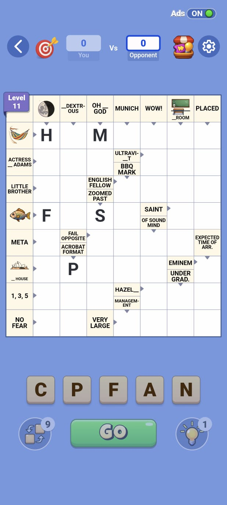

Crossword Go puzzle screenCrossword Go is a scrabble-style crossword puzzle game that has in-grid clue cells. The format required new guidelines that account for shortened clue length and a careful balance between image and text clues. It also required setting up and building new clue styles for smaller words, and reimagining crossword guidelines to fit the limited clue space. Additionally, curating compelling themes for Scrabble-style puzzles presented a distinct set of challenges.
As a founding team member, I established content guidelines and streamlined level production pipelines from creation to in-game publishing. I also served as the final sign-off authority for all visual assets, including puzzle imagery, homescreen icons, and puzzle artwork.
I was also part of the core team responsible for localization of Crossword Go into multiple languages including German, French, Spanish, Latin American Spanish, and Brazilian Portuguese. My responsibilities included setting up editorial and content guidelines for each language.